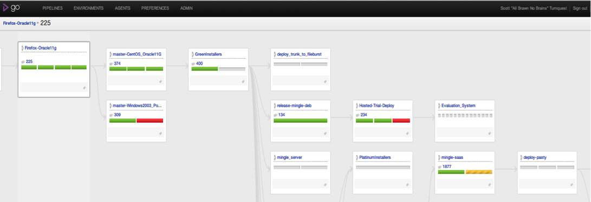

Ever since the Mingle team started working on its new cloud offering we made a conscious effort to improve our ability to continuously deliver valuable features and enhancements to our production environment. I expected that frequent deployments, tons of automation and lots of learning about Amazon's AWS would come with the territory - and it did. What I didn't expect was that I'd end up asking and answering so many questions dealing with when feature X or bug fix Y would be ready for testing and when it would be ready to be promoted to production.
With a traditional release structure all features and bug fixes are released at once, so it is an easy task to determine which features and bug fixes would be released. When we moved to a schedule that pushed new features and bug fixes into our cloud environment as soon as they were ready, we found ourselves with a new crop of questions on our hands.
Tracing features and bugs through a non-trivial build setup was not as easy as it should be
What features and bugs will be in tonight's deployment to production?
When can we start to dogfood this new feature in our staging environment?
That bug fix we put in, where is that in our pipelines?
Are we going to start testing it today?
I find myself answering or asking some variant of the questions above multiple times a day. Either because I'm eager to start testing a new fix, or because I want to help set our product managers expectations properly, or because we want to know when a customer will be happy because we've responded to their feedback, or… you get the idea.
We have multiple pipelines in our path to production. For legacy reasons we have pipelines that run tests using different browsers, databases and operating systems. We also run upgrade tests and performance tests at different frequencies based on need. Since we have a number of pipelines chained together it isn't always easy to know where a given change is in our deployment process. Consequently, it is difficult to answer questions about what features are in a given build or when a bug fix will be available for testing.
GoCD's value stream mapping feature
To answer each of the above questions, we now refer a lot to the new value stream mapping feature in GoCD. From any build we can now zoom in to find upstream and downstream pipelines and basically trace a single revision all the way through to production. Below is an example of the overview for a recent build that we are waiting to see promoted to our staging environment (called pasty).

The map above shows the key pipelines involved in the flow from our tests using Firefox and Oracle 11g all the way through to testing our hosting environment. Once the ‘mingle-saas' pipeline is green I know that the targeted bug fix will be ready for deployment to our dogfooding environment (called ‘pasty').
Seeing the big picture improves understanding
To answer our key questions easily we needed a big picture view of our pipelines. We needed to know more about our pipeline dependencies and where are artifacts are flowing. These days I find myself using the value stream map multiple times a day and I use it in conjunction with our card wall to drive conversations with our product manager around which new features and bug fixes will be included in the next deployment and when that deployment is likely to be done.
One added benefit we've gained from the value stream map is that I now have a much better understanding of the different pieces of our deployment process. This has definitely helped in conversations with the developers:
Developer: "We just have to wait for the GreenInstallers build to pass…"
Me: "GreenInstallers… ah yes I know exactly where that fits in the overall process so I have a good idea about when that build will be ready. Thanks."
I think it's safe to say that the new value stream map is my new favorite feature in GoCD.